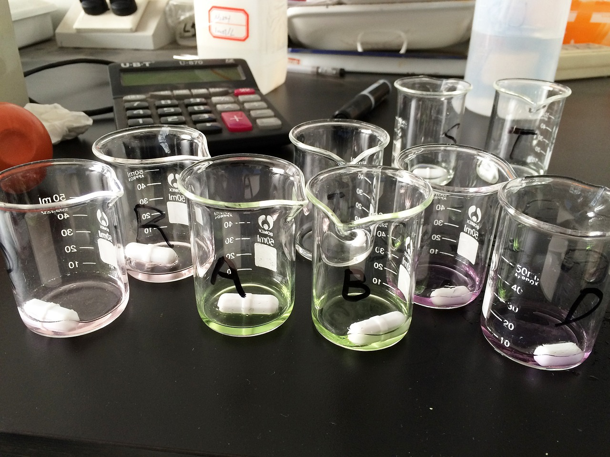

핵심광물, 상업 공급망 新시대 진입…투자 전략 재편 요구

글로벌 핵심광물 시장이 정부 보조금에 의존한 공급망 구조에서 민간 투자 중심의 상업적 공급망 생태계로 전환하는 새로운 시대에 진입하고 있다는 분석이 나왔다. 이는 중국의 수출 통제가 9개월 이상 지속되면서 시장의 적응 메커니즘이 작동하기 시작한 결과로 풀이된다.
중국은 2025년부터 갈륨·게르마늄·흑연·희토류 등 핵심광물에 대한 수출 통제를 단계적으로 강화해왔다. 이에 따라 대체 공급원을 찾는 서방국들의 움직임이 빨라졌고, 이제는 캐나다·호주·아프리카 등지의 민간 광물 개발 기업들이 상업적 공급망의 주요 주체로 부상하고 있다.
캐나다 핵심광물 개발사 리딩 엣지 머티리얼스(Leading Edge Materials)가 최근 희토류 관련 중요한 발표를 내놓는 등 비중국 민간 공급망 구축 사례가 잇따르고 있다. 미국 DOE가 295억 달러를 핵심광물 공급망에 투입하겠다고 밝힌 것도 민간 투자를 유인하는 마중물 역할을 하고 있다.
핵심광물 다변화 투자를 '전략적 위험 관리' 관점에서 접근해야 한다는 목소리가 커지고 있다. 단순히 중국 의존도를 낮추는 것을 목표로 삼기보다, 공급 충격 시 얼마나 빠르게 대체 소싱이 가능한지를 기준으로 포트폴리오를 구성해야 한다는 논리다.
실제로 2025년 핵심광물 투자는 전년 대비 9% 감소한 것으로 집계됐다. 공급 확대 의지는 있지만 광산 개발의 높은 초기 비용, 긴 회수 기간, 가격 변동성 등이 민간 투자자들을 주저하게 만들고 있다. 이 '의지와 현실의 괴리'를 메우는 것이 핵심 과제로 지목된다.
희토류 가격 동향을 보면, 프라세오디뮴·네오디뮴(Pr-Nd) 등 영구자석용 경희토류는 최근 반등세를 나타내고 있는 반면, 중중희토류는 여전히 부진한 흐름을 이어가고 있다. 이러한 양극화는 수요처(EV용 모터, 풍력발전 등)의 차별적 성장 속도를 반영한다.
CFR(미국외교협회)은 최근 보고서에서 '중국의 공급망 무기화를 해체하려면 단기 정책 대응을 넘어 10~15년 단위의 민간 투자 생태계를 구축해야 한다'고 제언했다. 단순한 수입처 다변화가 아니라, 채굴-정제-소재화로 이어지는 전 밸류체인의 상업적 자립이 필요하다는 것이다.
한국은 반도체·배터리·방산 등 핵심 산업에서 희토류 및 핵심광물 의존도가 특히 높다. 이언주 의원 등 국회에서도 AI 시대 전력·핵심광물·에너지 안보를 하나로 연계하는 통합 경제안보 전략의 필요성이 제기되고 있으며, 산업계도 이에 호응하는 움직임을 보이고 있다.
국내 기업들의 대응도 빨라지고 있다. LS전선이 비중국 희토류 자주권 확보에 1616억원을 투자한 데 이어, 포스코그룹도 핵심광물 수출 통제에 대한 주요국 대응 전략을 공개 분석하며 공급망 다변화의 방향성을 제시했다.
전문가들은 민간 상업 공급망이 실질적인 대안으로 기능하려면 세 가지 조건이 갖춰져야 한다고 지적한다. 첫째는 안정적인 수요 약정(off-take agreement), 둘째는 정부 지원을 통한 초기 리스크 경감, 셋째는 정제·가공 기술의 비중국권 내재화다. 이 세 조건이 충족될 때 비로소 민간 투자가 선순환 구조를 만들 수 있다.
시장 전망 측면에서는 2026~2028년이 핵심광물 공급망 전환의 결정적 시기가 될 것이라는 관측이 지배적이다. 이 기간에 서방권 광산 프로젝트들이 생산 단계에 진입하면서 중국 의존도가 실질적으로 낮아질지, 아니면 개발 지연으로 공급 부족이 심화될지가 판가름 날 것으로 예상된다.
국내 소부장 및 소재 기업들은 이 전환기를 기회로 활용하기 위해 비중국 광물 소싱 네트워크 구축, 재활용 기술 개발, 대체 소재 연구 등 다각도의 전략을 병행해야 한다는 지적이 나온다. 단기적 가격 변동에 흔들리지 않는 장기 전략이 어느 때보다 중요한 시점이다.